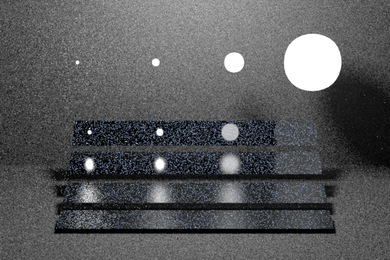

**Homework 5**
Student name: Federico Stella
Sciper number: 342796
Microfacet BRDF (30 points)
===========================
Evaluating the Microfacet BRDF
------------------------------
I implemented the microfacet BRDF following the instructions in the homework assignment. The formulas were straightforward, but some extra care had to be put to deal with special cases and to avoid `NaN` values during integration. For example, to avoid evaluation of rays below the surface (it's not a dielectric) and in the `G1` function, which I implemented privately in the `Microfacet` class. In this function, in fact, the b value could become undefined for very small angles. Moreover, since the `c` term is only used to determine the sign concordance, I avoid the division.
Sampling the Microfacet BRDF
------------------------------
The pdf has been straightforward, as it is a simple formula.
The sample function, however, needed extra care in dealing with "meaningless" samples, such as when a normal is sampled very far from the mesh surface normal and the reflection ends up in the interior, causing some energy loss.
Validation
----------
The tests have been passed without problems, and playing with the warptest GUI also doesn't produce problems.
Here are the rendered results compared to reference.
Ajax (smooth):
Ajax (rough):
Brute force path tracer (15 points)
===================================
The iterative implementation has been quite straightforward, it just needed some care when dealing with the continue-probabilities multiplications. In a recursive implementation the behavior is simple, it just follows what we've seen in the lectures step by step, whereas in the iterative version the accumulation on a throughput variable can potentially lead to problems if done incorrectly. To deal with it and avoid the use of lists, stacks or similars, I simply maintain a throughput variable and, and the end of each iteration, I divide the new throughput by the continuation probability *of the previous iteration*, since the continuation probability of the current iteration only affects the results of the next recursive function call, aka the next iteration.
Here and in the following path tracers I decided to use dynamic memory allocation to create new rays. This could be avoided by keeping the same ray and changing its attributes. However I didn't see visible performance drops on doing so, and, as a general software engineering choice, I prefer to avoid changing attributes when the conceptual object is different, as changing attributes could potentially cause side effects if the class is not perfectly known.
Following the advice, I've set the minimum number of bounces to 3.
Validation
----------
The tests have been passed without problems.
Cornell box:
Veach material test scene:

Table test scene:
Path tracer with next event estimation (25 points)
==================================================
EMS worked, with my surprise, on the very first try. However, for some reason, I've queried the BSDF's eval function swapping the `wi` and `wo` vector. This is not a problem in general, as the BSDF is supposed to be symmetric, however I also copy-pasted this part of the code inside the MIS sampler, which eventually caused a small deviation from correctness. More on this in the next section.
The same trick as in the brute force tracer is applied here to store throughput and apply continuation probabilities without the use of collections.
Validation
----------
The tests have been passed without problems.
Cornell box:
Veach material test scene:
Table test scene:
Path tracer with Multiple Importance Sampling (30 points)
=========================================================
The implementation of this tracer was also quite straightforward, following the slides and the assignment instructions. However, the direction swap mentioned in the previous section was causing problems around diffuse surfaces. It took me an extremely long time to notice that I was using the query not only to sample/eval, which are symmetric, but also to compute the pdf of the sampled direction. As a result, I was querying for the wrong direction. This caused no problems in the cbox scene, an extremely small deviation from mean in the veach scene (0.001 if I remember correctly), and a suble but visible deviation in the table scene (0.035, if I remember correctly, but it was visible on the tabletop).
A part from these problems, my MIS tracer stems from the code of the previous ones and keeps the same structure. When sampling the probability distributions and computing weights, I decided to convert the emitter distribution to the BSDF distribution, following the differentials in the course slides.
I also took care to make this iterative implementation as close as possible to a recursive one, in particular for what concerns hitting a direct light from a BSDF sample. In a recursive implementation that follows the course slides, when reaching a certain surface point we sample the emitters for direct illumination and we also sample a new direction and check for emitters there. In the iterative code, this part can be delegated to the next loop iteration. However, if the bounce is discarded due to the Russian roulette, this emitter will not be counted. To count it, I anticipate this check at the end of the loop.
Validation
----------
The tests have been passed without problems.
Cornell box:
Veach material test scene:
Table test scene:
Hacker Points (20 pts)
============================
I've read the paper from Walter et al., and I've implemented a dielectric microfacet model following it thoroughly. To check for correctness, I created a simple new scene, which can be found in the [hacker folder](../../scenes/pa5/hacker), consisting in a cbox with the dielectric ball replaced by the ajax bust, located quite far on the left in order to evaluate refractions and reflections better. There is also an XML of the same scene for Mitsuba, which I used as a reference renderer.
Unfortunately I kept getting a small deviation from the reference image and, after tweaking a lot of small things, I checked Mitsuba's own code to see if my code was correct. I slowly changed my implementation to fit Mitsuba's code more and more, so that it could be easier to check for mistakes. At the end I ended up, in order to be completely sure, by matching my code almost perfectly with Mistuba's, with some differences due to the different architectures of the renderers, and also due to my own functions behaving slightly differently (G1, Beckmann, etc.). This final version of my Mitsuba-like code can be found in `microfacet_dielectric.cpp`, and in the comments there are multiple different partial implementations from myself that also work, whereas an older version of my direct implementation of the paper can be found in `microfacet_dielectric_mine.cpp`. At the end, there was no obvious problem with my implementation. I simply ended up keeping my final code because it was easier to debug when comparing results directly to Mitsuba. My older code also works fine, except for the results being a bit darker than they should, and I've included it so that it can be seen that I didn't "cheat" by simply copying Mitsuba's code (the "darker" problem also happened with my final implementation but I don't remember exactly how I solved it, because I was only maintaining and debugging the new implementation). Instead, I fully implemented the paper and then I made the code better and better, by comparing my own results with Mitsuba, and simply matched Mitsua's code to be completely sure about correctness.
Comparing to Mitsuba's algorithm, I added a couple of things. When evaluating a query for reflections, I also divide the value by the absolute value of the cosine between the outgoing direction and the local normal, which is a term present in the formulas and in the assignment directions but not on Mitsuba. This made my results better (i.e. closer to reference), I'm guessing that it's not present in Mitsuba due to the different architecture (and undergoing assumptions) of the integrators. Secondly, in Mitsuba the distributions are evaluated with the alpha-scaling trick described in the original paper. However, the final sample weight uses an unscaled alpha. This is not consistent and also different from the paper (or at least not specified), so I ended up using the scaling trick everywhere in the sample function. This also improved the results.
Talking about the algorithm and architecture themselves, since it needs an extra random sample to decide between reflection and refraction (and this needs to be decided after computing the Fresnel coeffient, which in turn requires the sampled normal that already consumes the 2D input sample), I added a sampler pointer to the BSDF query.
In the test folder I also added an XML file with 4 Chi2 tests with different alphas and refraction coefficients, showing the correctness of the implementation:
Here are 2 renderings of the Ajax bust in the Cornell box, comparing my render to the references computed in Mitsuba.
`Alpha=0.0001`, `intIOR=1.2`, 1024 samples, MIS
`Alpha=0.1`, `intIOR=1.2`, 1024 samples, MIS
Artist Points (5 pts)
============================
This time I went for something different than the teapot-nonsense of last time. Instead, I've put three Ajax busts in the cbox, and spent most of my time playing with the attributes of the newly implemented microfacet dielectric, and with the colors of the image. What I wanted to achieve, in light of the final project, was a sense of change from something tangible to something absolutely intangible, both because smaller and interacting with light, as time passes from left to right. The face of the bust also moves incrementally, shifting from looking at the horizon to looking at the viewer, as a goodbye.
Also, quite clearly, I like pink-ish atmospheres.
Extra
===========================
I've modified Nori's code to render incrementally. This is very useful for me when I don't know exactly how many samples I need to become noise-free, or if I don't know how much time I can let it run. I've also added a progress bar.
Feedback
========
We would appreciate any comments or criticism to improve the projects in future years--naturally, this part will not be graded. Examples of information that is useful to us includes:
* How much time did you spend on the assignment? How was it divided between designing, coding, and testing?
*Around 3-4 days. I had a strange and very small deviation from the mean in my MIS integrator and took me a loooong time to find the problem, which of course was stupid. The hacker points implementation has been a big pain this time, unfortunately.*
* What advice should we have given you before you started?
*Maybe to improve the course in the next years, this time the assignement felt a lot less clear than usual. It was easy to follow and implement, but it felt different than the lecture and reconciling some of what we've seen in class with it was not easy or possible at all. I think it could be nice to spend more time on the math of this, either in class or in the assignment description. *
* What was hard or surprising about the assignment?
* What did you like or dislike? What else would you change?